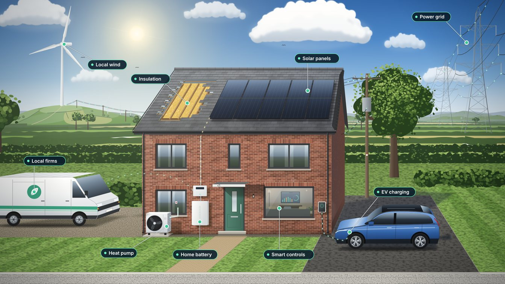

For pupils in Years 7 to 11
Join the dots from your GCSEs to clean energy jobs

Scan to build your roadmap
Four quick questions. About five minutes. Free, with no login.
See the jobs that fit you, the GCSE topics they use and the ways in.
vahidinasab.github.io/sustainable-skills
Sustainable Local Energy Skills Roadmap, University of Salford. A guide, not personal careers advice.